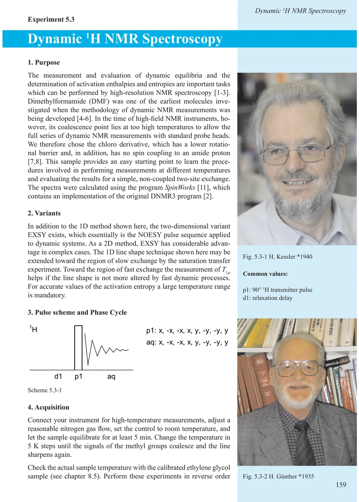
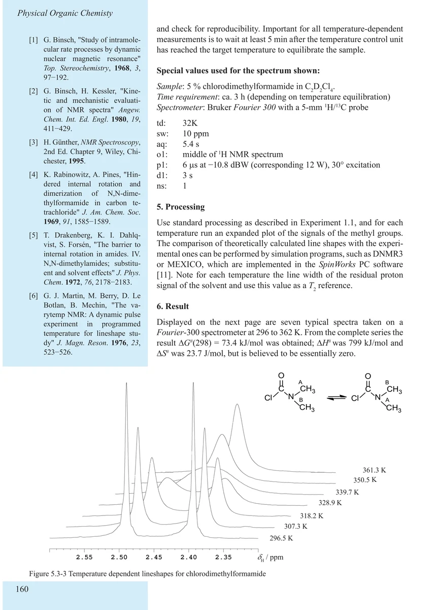
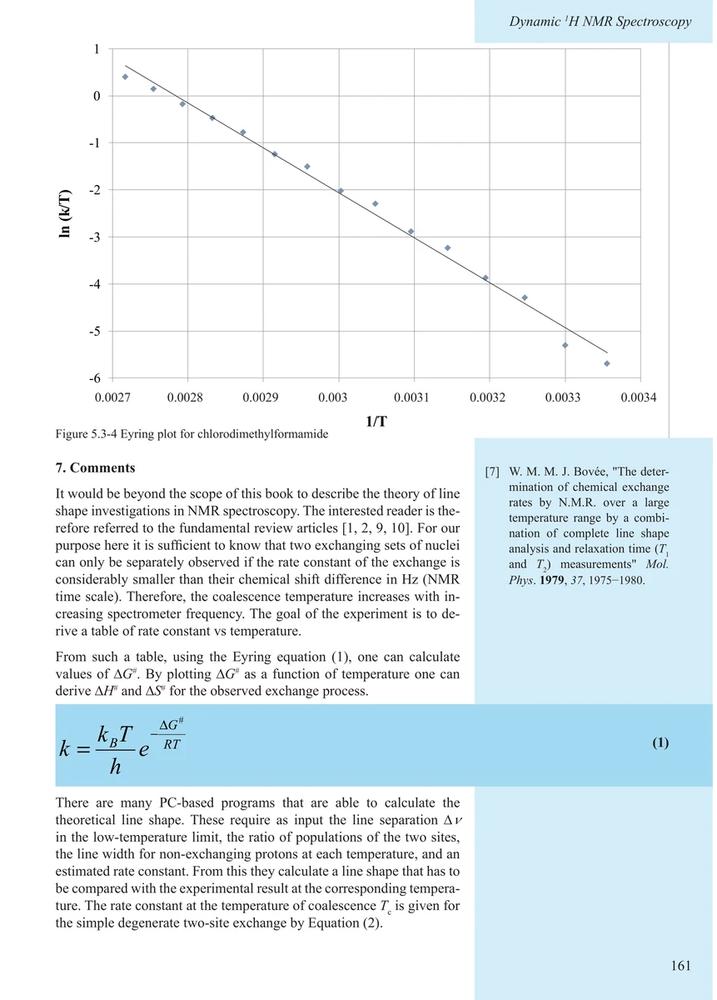
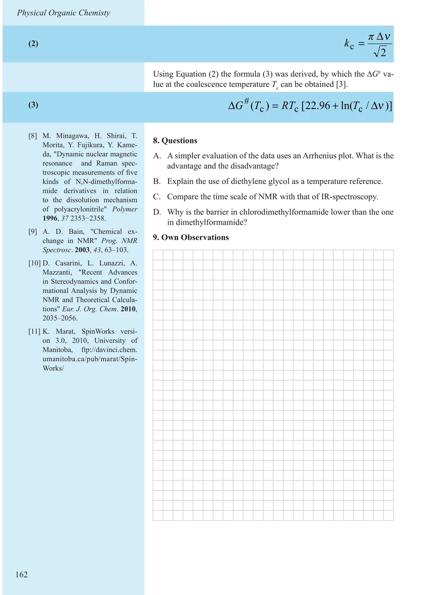

Item 5.3
Dynamic 1H NMR Spectroscopy
动态 ¹H NMR 波谱
PDF 169–172 · 原书 159–162 · Experiments in Physical Organic Chemistry




核磁共振实验方法、脉冲序列与谱图实践
Item 5.3
动态 ¹H NMR 波谱
PDF 169–172 · 原书 159–162 · Experiments in Physical Organic Chemistry



